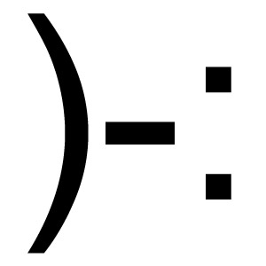

Meetings
This section includes all the 'after-action' reports of the Games Creators Club weekly meetings.
Meetings are held in the evenings at Kenilworth School during term time. The club currently has members from Year 7 to Year 11. If you are a student at Kenilworth School and you would be keen to join, let your form tutor know and they can put you in touch with the organisers.
Alternatively, you can follow along with the meetings and content using the articles posted here.
*No* GCC This Week (1 Oct)
- Details
- Published on Tuesday, 30 September 2014 14:34
- Written by Edward Powell
- Hits: 687

Because of the school open day there will be no GCC session this week. But fear not, for we will be back to game coding as normal next week (Wednesday 8 Oct @ 7pm sharp)! See you then.
Minecraft modding… take 2
- Details
- Published on Tuesday, 08 July 2014 10:34
- Written by Edward Powell
- Hits: 775

- Download minecraft 1.6.4
- Create a new profile that runs in this version
- Disconnect your laptop from the internet and make sure you can still run under this profile
I will be setting up our own GCC wireless network and we will also talk a bit more about how computers connect and communicate over local area networks (LANs) and the internet.
Instructions are links are all here in The Young Person’s Guide to Programming in Minecraft. Feel free to get ahead of the game (literally!) before Wednesday…
Mouse Input & Buttons
- Details
- Published on Wednesday, 11 June 2014 09:07
- Written by Edward Powell
- Hits: 806
![]() This
week, by popular demand, we are going to add an options screen to our
games. To achieve this we are going to need to do two new things – read
mouse clicks and positions, and know if we have clicked inside a
specific region of the screen.
This
week, by popular demand, we are going to add an options screen to our
games. To achieve this we are going to need to do two new things – read
mouse clicks and positions, and know if we have clicked inside a
specific region of the screen.
The first part is easy. Just like the close button on the top right of your game window, your game gets to hear about mouse input via events. In the same place where we check for the quit event (triggered by the close button being clicked) we can also check for mouse movements and mouse clicks.
while game_running:
for event in pygame.event.get():
if event.type == pygame.QUIT:
game_running = False
if event.type == pygame.MOUSEMOTION:
mouse_position = event.pos
if event.type == pygame.MOUSEBUTTONDOWN:
click_position = event.pos
When the MOUSEBUTTONDOWN event occurs, we can do whatever it is we want to do in response to mouse clicks. In our game options screen, for example, we want to see if one our buttons has been clicked – how can we do this?
Well, we can go back to basics and use very similar code to that we use for checking if two rectangles have collided. It turns out as well as Coliderect, there is a Collidepoint method that will return true if a coordinate point (as opposed to another rectangle) is inside the target rectangle. As you can see from the code above, we are already storing the coordinate point of the mouse in the click_position variable, so when we detect a mouse click we can simply test this point against a list of button rectangles to know which one was clicked!
if event.type == pygame.MOUSEBUTTONDOWN:
click_position = event.pos
if option_button1_rect.collidepoint(click_position):
# Do Option Button 1 stuff...
elif option_button2_rect.collidepoint(click_position):
# Do Option Button 2 stuff..
...
...
As well as adding a new screen to our existing game, it is possible to build an entire game around this simple game mechanic. Take a look at ClickChase.py and see if you can follow how it works and modify it.
Pac-man pop-gun
- Details
- Published on Wednesday, 12 March 2014 14:12
- Written by Edward Powell
- Hits: 780

By popular request we are going to add GUNS this week – I can’t help thinking that you’re not really entering into the spirit of Pac-man by arming him, but here goes…
The Bullet Data
The key to allowing our player to fire is really management of a list of bullet objects, so lets start by defining the data of a bullet and creating a list of them. We are going to make this data available to all functions as a global variable so we will create it with the other global game data just after your pygame.init() call.
| bullets = [] for index in range(10): bullet = { "image":pygame.image.load("exit_32.png"), "rect":pygame.Rect(0, 0, 16, 16), "speed":8, "velocity":[0,0], "active":False } bullets.append(bullet) |
You can see that the bullet is very similar to the other game objects we have created, like the the player and enemy. The for loop adds 10 of them to the global list called bullets.
Currently our bullets are being created with no velocity, at position 0,0, and they are set as inactive (their “active” flag is set as False). The plan is that that we will re-use these same bullets each time the player fires. This approach avoids constantly creating and destroying bullet data, but it also means that we can only ever have 10 bullets �?active’ at any time. We can tweak this number, but it is useful to have a cap on the maximum number of bullets in any case, to avoid us slowing down the game. So the process of firing will be like this:
- If bullet is fired:
- Find the first available inactive bullet
- Move it to the player
- Set its velocity according to the direction the player is facing
- Activate it
Then the update function will need to do the following:
- For each bullet that is active:
- Update its position according to its current velocity
- Check for collisions with relevant objects (currently this means Walls or Enemies)
- If collided with a wall:
- Deactivate the bullet
- If collided with an enemy:
- Kill the enemy
- Deactivate the bullet
Finally the drawing function will be easy:
- For each bullet that is active:
- Blit the bullet’s image to its current position rectangle
That’s it!
Bullet Drawing
So lets do the easiest function first:
| def DrawBullets(): global bullets, screen # For each active bullet for bullet in bullets: if bullet["active"] == True: screen.blit(bullet["image"], bullet["rect"]) |
Simples!
Bullet Update
The next function will do the basic update and deactivate the bullet when it hits a wall (we’ll kill enemies with it next week!):
| def UpdateBullets(): global bullets, walls, enemies # For each active bullet for bullet in bullets: if bullet["active"] == True: bullet["rect"] = bullet["rect"].move(bullet["velocity"][0], // bullet["velocity"][1]) if bullet["rect"].collidelist(walls) > -1: bullet["active"] = False |
NOTE: the “//” in the code above means I’ve had to split the line to paste it into the website, but you should not – keep the two bits together on one line.
Bullet Firing
Now this is the trickiest one because of a subtle issue that we haven’t really encountered before. Our previous checks have simply been to see if a button is down. If we do this for firing then we will fire all of our bullets immediately – it will be a machine gun by default! Instead, to make it a single shot, we need to fire one each time the key is pressed. To do this we need to only activate a bullet if the fire button is pressed, but was not pressed last time we checked. This requires an additional global variable, last_fire_button_state, that we can check and update in the following function:
| def CheckFireBullet(): global bullets, player, last_fire_button_state, keys current_fire_button_state = keys[pygame.K_SPACE] if current_fire_button_state and not last_fire_button_state: # Find the next available bullet for bullet in bullets: if bullet["active"] == False: # Move it to the player's position bullet["rect"] = player["rect"] # Reset the bullet velocity bullet["velocity"] = [0,0] # Set its velocity according to the player's direction if player["direction"] == 0: # left bullet["velocity"][0] = -bullet["speed"] if player["direction"] == 1: # right bullet["velocity"][0] = bullet["speed"] if player["direction"] == 2: # up bullet["velocity"][1] = -bullet["speed"] if player["direction"] == 3: # down bullet["velocity"][1] = bullet //["speed"] # Activate it bullet["active"] = True # break out of the for loop last_fire_button_state = current_fire_button_state break # Store the last button state in the global for the next time... last_fire_button_state = current_fire_button_state |
Adding the function calls
All that remains now is to call our new functions in the main game loop – we can call
CheckFireBullet()
UpdateBullets()
after the existing UpdateEnemyPosition(enemies, walls).
then DrawBullets() can be added after DrawPlayer(player)
You should now have the ability to fire some bullets in the direction your player is facing.
Next week we’ll blast enemies with �?em!
Jet Pack
- Details
- Published on Tuesday, 25 February 2014 21:17
- Written by Edward Powell
- Hits: 803
To begin with, our player data is going to need to include a new �?velocity’ field. Velocity is different from simple speed, because it encodes direction as well as magnitude. In our case the velocity is going to be represented with two values – one for the x direction (left and right) and the other for the y direction (up and down). We need to add this field to our existing data:
| player = { |
This new velocity field will now be used to decide how far and how fast the player is moving, but we will continue to use the old speed field as a *maximum* speed to cap the velocity values.
Next we need to create our new movement function. Hopefully the power of functions will now become apparent because we can leave all of our other code almost entirely untouched and just focus on this new functionality. The fundamental principles of our new function are pretty similar to the previous one and can be divided into the following stages:
- Copy the current player position rectangle
- Read the keyboard input
- Use the input to update the position of the copy position rectangle
- Check if the copy rectangle collides with any level walls
- If it doesn’t collide, use the copy to update the actual position of the player rectangle
Our new function is a little more sophisticated in how it does these things, but essentially it is the same as our previous one. I will go through it in detail during the session.
| def UpdateJetPackPlayerPosition(player, walls): # reset the x movement velocity to zero # Create gravity force # Read the keyboard input and move the marker if key[pygame.K_RIGHT]: if key[pygame.K_UP]: if player["velocity"][1] > player["speed"]: if player["velocity"][1] < -player["speed"]: player_move_rect = player_move_rect.move(0, player["velocity"][1]) |
Finally we need to update our main game loop to replace the call to UpdatePlayerPosition, with the new UpdateJetPackPosition.You’ll probably want to redesign your levels to be more like platforms than mazes, but apart from that you’re done. We now have a radically different game by modifying just one function – how cool is that!